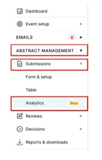
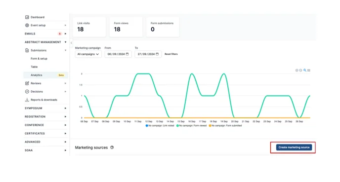
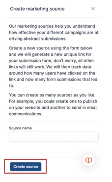
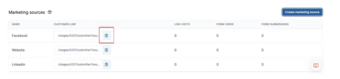
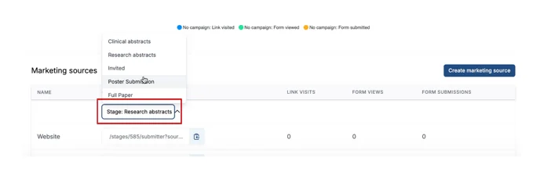
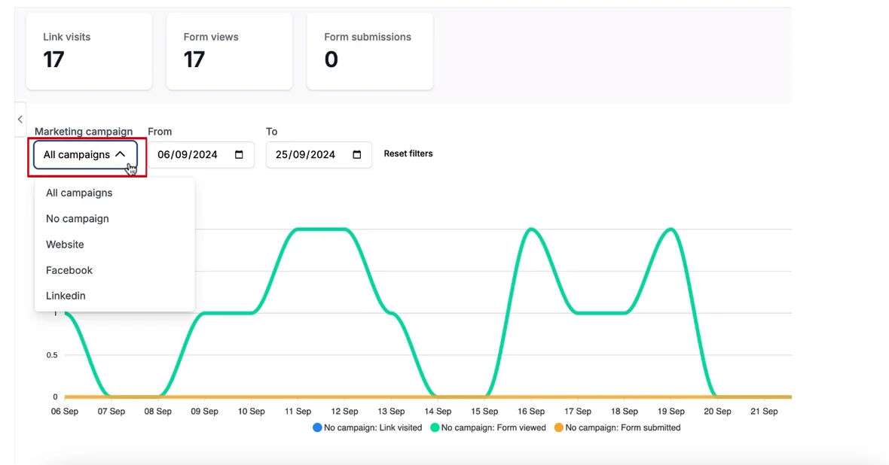

Using submission analytics
Find out how to use submission analytics, and what they can do to help elevate your event.#
Please note: This information is for Admins only!
Submission Analytics allows Admins to track links to get a better overview of where the Link Visitor/Form Views and Form Submissions are coming from.
For example: A submitter has followed the link you placed on LinkedIn calling for submissions.
You’ll see how many people have clicked on the link you placed on LinkedIn and when etc.
To access Submission Analytics, navigate to the left-hand menu on your dashboard and click on Abstract Management—Submissions—Analytics.

When people start clicking on your links you will see a graph on the analytics homepage, detailing dates of when the link has been clicked and by how many people.
How to create a link
Click on the Create Marketing Source button to the right of the screen.

Next add the source name to the box on the screen that pops up to the right.
This is so you can name the link and can track where it is from.
Then click on the Create Source button.
For example: Name the source "Facebook" if you're posting the link on Facebook. The clicks from Facebook will show in your analytics.
You’ll need to create a source name for each place you post a link.
- For example, if you post links on your website, Facebook, email, and LinkedIn, you’ll need to create four separate source names: Website, Facebook, Email, and LinkedIn.

Now, on your analytics homepage, you’ll see under Marketing Sources those Source Links you have named and created with a customer link next to them.
You copy the relevant link by clicking on the Copy link button next to the link and pasting it to your website/Facebook/LinkedIn etc etc.

Please note if you are a Multi-Stage event, we will create a link for each of your stages for each source. Click the drop-down menu under customer links to select the stage you require to obtain the link for.

When people start to click on the links, a graph will begin to populate on the Analytics homepage.
From the drop-down box named Marketing Campaign you can choose whether you want to see an overview of all the links or if you’d prefer to break it down to view links from each source.

Should you need further assistance please contact our Support Team via this Contact Form.
Didn't solve it? Ask our support team
No question is too small, and there's no charge for asking. Raise a ticket and someone who knows the software will pick it up.
Did this page solve it?
Thanks — this helps us fix it.